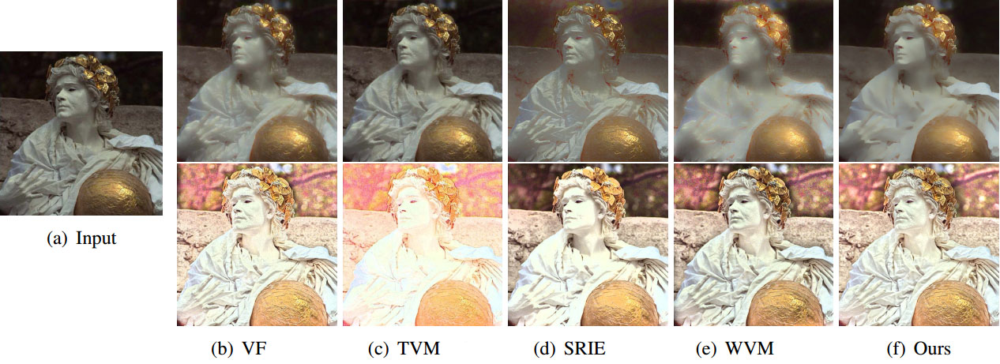
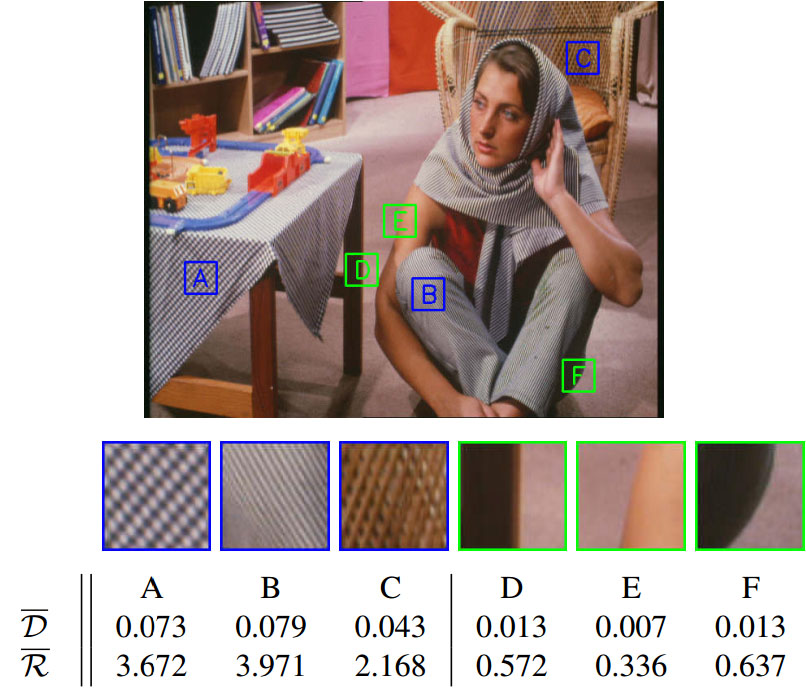
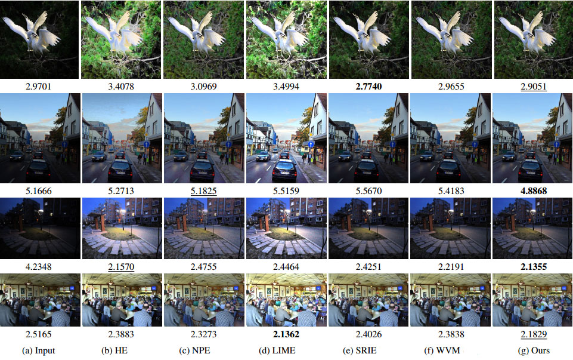
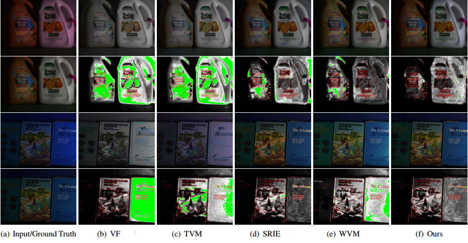
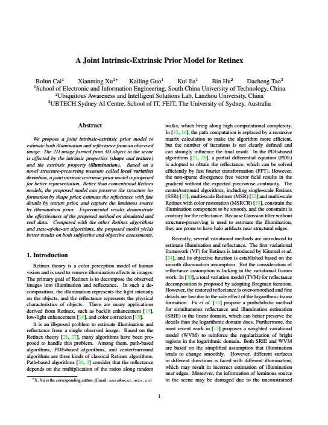

Bolun Cai, Xianming Xu, Kailing Guo, Kui Jia, Bin Hu, Dacheng Tao
IEEE International Conference on Computer Vision (ICCV), 2017
Bolun Cai Xiangmin Xu Kailing Guo Kui Jia Bin Hu Dacheng Tao
South China University of Technology
|  |
Comparison of Retinex decomposition. The illumination is shown in the first row, and the reflectance in the second. |
Abstract
We propose a joint intrinsic-extrinsic prior model to estimate both illumination and reflectance from an observed image. The 2D image formed from 3D object in the scene is affected by the intrinsic properties (shape and texture) and the extrinsic property (illumination). Based on a novel structure-preserving measure called local variation deviation, a joint intrinsic-extrinsic prior model is proposed for better representation. Better than conventional Retinex models, the proposed model can preserve the structure information by shape prior, estimate the reflectance with fine details by texture prior, and capture the luminous source by illumination prior. Experimental results demonstrate the effectiveness of the proposed method on simulated and real data. Compared with the other Retinex algorithms and state-of-the-art algorithms, the proposed model yields better results on both subjective and objective assessments.
Local Variation Deviation
|  |
Local variation deviation for different patches. D and R are the averages of variation deviation in the local patches. The local variation deviation provides strong discriminative power in distinguishing texture (in blue bounding box) and structure (in green bounding box). |
Experiments
|  |
Comparison of illumination adjustment with NIQE. Our method has a lower value in agreement with our subjective experience. |
|  |
Comparison of color correction. The second and fourth rows in the figure are the spatial location of the errors between the ground truth and corrected results. As can be seen from the spatial locations of the errors, the green areas of our results are smaller than the others, which indicates that our result is more similar to the ground truth. |
Downloads
|  |
"A Joint Intrinsic-Extrinsic Prior Model for Retinex" Bolun Cai, Xianming Xu, Kailing Guo, Kui Jia, Bin Hu, Dacheng Tao IEEE International Conference on Computer Vision (ICCV), 2017 |
Last update: Oct 06, 2016